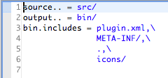
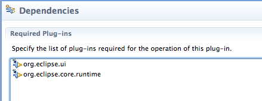
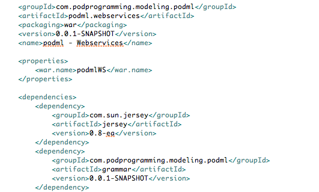
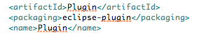

Introduction to Tycho
Building eclipse plugins with Maven and Tycho
Tycho : Yet Another Eclipse Building Tool
- Buckminster
- B3
- Athena
- PDE and Ant
- IVY
What is Tycho?
- Maven extensions for Eclipse/OSGI
- Builds for plugins, features, update sites, ...
- Manifest based approach
- Only one tiny conf file needed per project
- The power of Maven!!
Classic eclipse project configuration
build.properties : project structure

MANIFEST.MF : dependencies

Classic maven project configuration
pom.xml : dependencies, build process, ...

Artifact packaging
Specified with <packaging> element in pom.xml
Artifact packaging
Tycho adds Eclipse specific packaging types :
- eclipse-plugin
- eclipse-feature
- eclipse-update-site
- ...
Define your target platform
The set of features/plugins needed to build your app, 3 ways to define it :
- Through a particular eclipse install
- In your pom.xml, defining the p2 repos needed
- In a separate .target file
Define your target platform
Through a particular eclipse install :
-Dtycho.targetPlatform=<eclipsehome>
Define your target platform
In your pom.xml :

Define your target platform
In a separate .target file :

Define the packaging ...

- eclipse-plugin
- eclipse-feature
- eclipse-update-site
- ...
Or almost
You need to define a parent pom.
- Aggregates projects as modules
- Common build settings
- Repositories
- Target platform
- Target environments